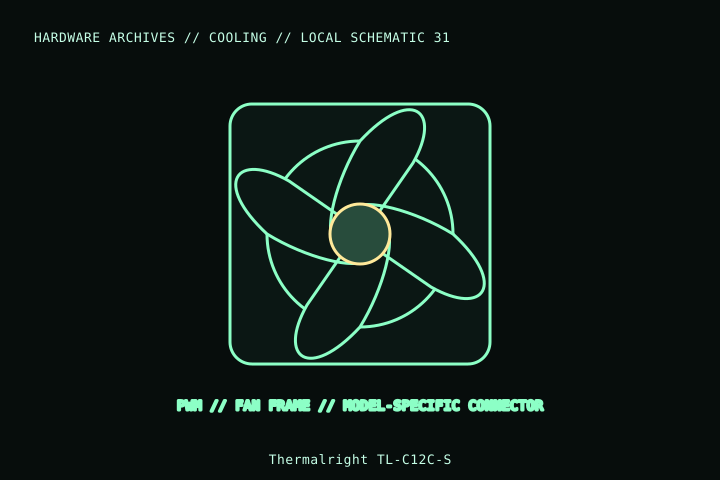

[ INDIVIDUAL COMPONENT // COOLING ]
Thermalright TL-C12C-S
Thermalright TL-C12C-S is a 120 × 25 mm PWM fan. This record is for the S variant; it is not the RGB TL-C12C-S-X3 family or another TL-C12C revision.

MODEL IDENTIFICATION: Verify full model, suffix, SKU, generation, connector, and host-support documentation against the physical item. The record describes only the identified model and does not guarantee host compatibility.
Specifications
| Exact identity | TL-C12C-S |
|---|---|
| Frame | 120 × 120 × 25 mm |
| Speed / control | 1,550 rpm ±10% maximum; 4-pin PWM |
| Electrical data | 12 V fan supply; rated current 0.20 A in the manufacturer listing. |
| Manufacturer-listed acoustic/air data | 66.17 CFM maximum airflow; 1.53 mm H₂O maximum pressure; 25.6 dBA maximum (manufacturer test ratings, not system guarantees). |
| Mount / host | 120 mm screw pattern; verify lead, exact suffix, frame thickness, and header current before installation. |
Compatibility and installation
- Confirm TL-C12C-S, not TL-C12C-S-X3 or a lighting suffix, before assuming the fan has no LED lead.
- Connect its 4-pin PWM input to a suitably rated fan header/controller and check the mount depth and screw length.
- Airflow and noise in a host depend on grille, filter, radiator, case, fan curve, and measurement method.
Service notes
Disconnect power and restrain the rotor when cleaning. Inspect the lead and mounting holes; do not disassemble the sealed bearing.
Manufacturer references
- Thermalright — TL-C12C-SManufacturer model page and specification table.
- Thermalright — SupportManufacturer product support.
Model variants and revisions may change specifications or included hardware; the manufacturer’s exact product page/manual and the host manual take precedence.